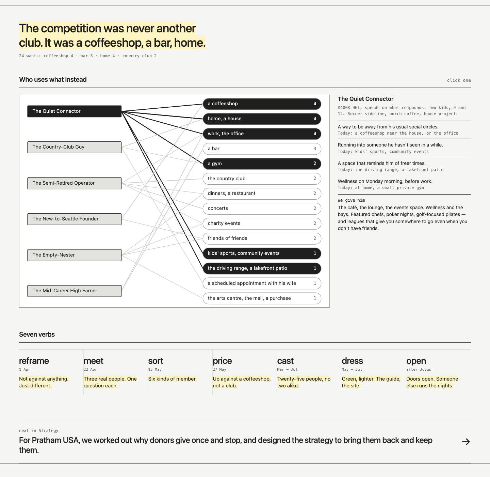
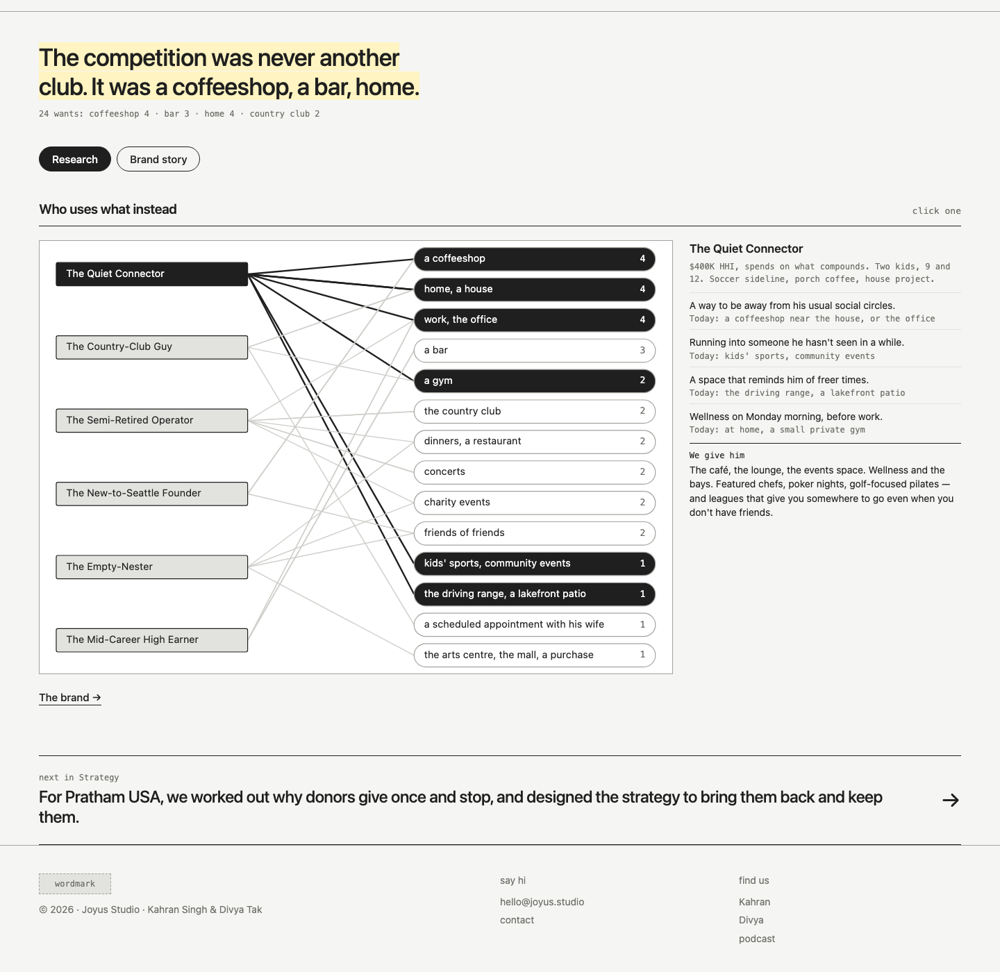
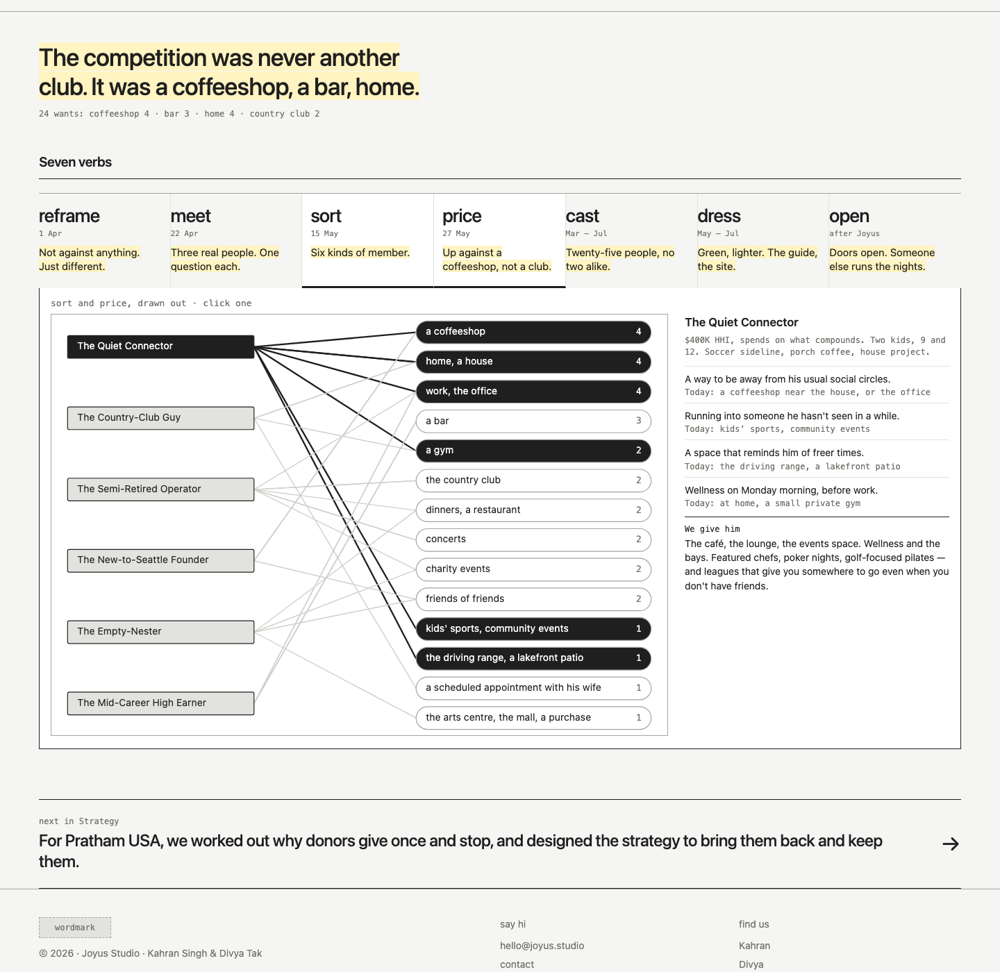
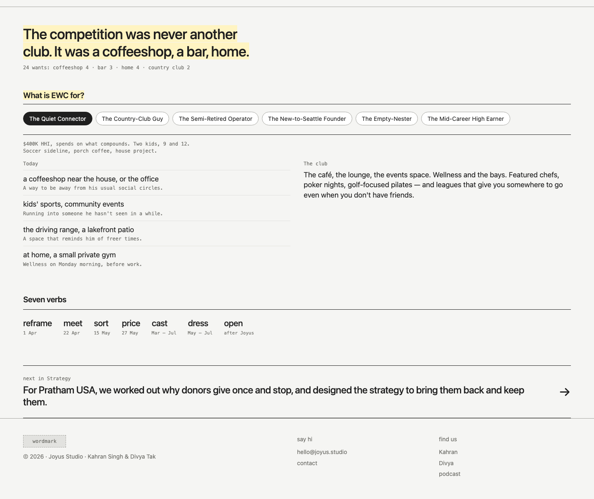
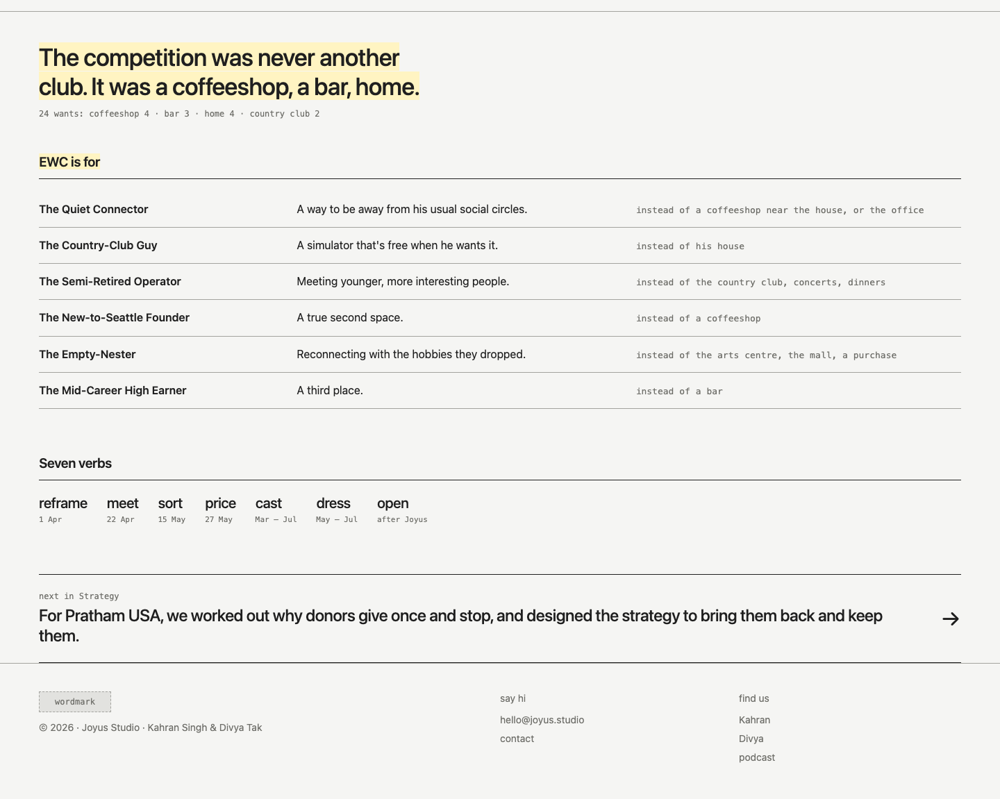

Study 44 · 27 October 2026 · Kahran
EWC, the web + the verbs
Study 43's two picks, the web (3) and the seven verbs (6), put together five ways. The finding goes first on every page, and each page keeps to 120 words of ours. The brand guide's lines are extra, and they appear word for word.
From the call on 27 Oct: treat one as user research and one as the brand story, because "we create too much strategy and artifact together. We need to be able to sell both of those things separately." Put insight first ("who uses what"), and "make shit way more digestible… what is EWC for, and then for the Quiet Connector, the Country Club, and then like remove everything else from the outside." Kahran: "directionally this feels right, but we just need more density and less words."
Divya and Kahran, granola 5781859, turns 137–177




Next: Kahran's text pass, then Divya. Every string on the five pages has a data-copy id. The full list, with each string's flag and source, is in copy.json. Yellow means draft. Change the words in words.json and run build.cjs.